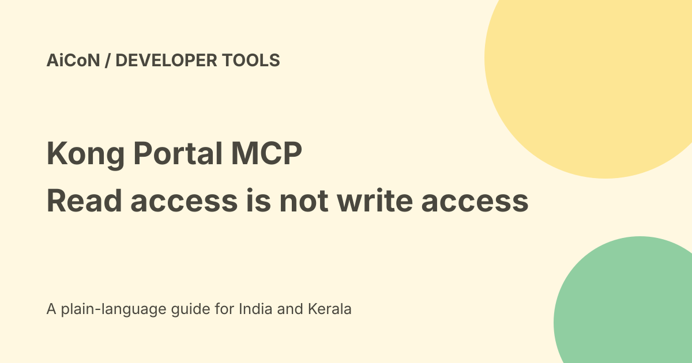

Kong Portal MCP: OAuth, documentation and write-access limits
Kong's Portal MCP Server lets compatible agents discover and read Dev Portal pages and API specifications. Its announcement says existing access rules remain in force. The separate Konnect MCP Server can write portal content, so a documentation connection should not be confused with unrestricted publishing access.

What does Portal MCP replace?
An agent otherwise may scrape HTML or guess where API information lives. The dedicated per-portal server gives it a structured route to published pages and specifications.
Structured access can reduce guessing, but the documentation can still be stale or wrong. Check the actual API version, permissions and response before building around an example.
Anonymous and authenticated access
The vendor says an anonymous agent sees what an anonymous developer can see. Authenticated agents are bound to the role permissions of the person they act for.
The post says drafts and restricted documentation remain hidden from unauthorised people. These are product rules, not an independent permission test performed here. Check with both an allowed account and a disallowed account before publishing private docs.
OAuth with PKCE
The announcement describes OAuth 2.0 Authorization Code flow with PKCE. The developer logs in and consents, while portal administrators control trusted clients and allowed dynamic-registration redirect URLs.
Consent connects an account. It does not mean every future disclosure or write is appropriate. Inspect the client, scope, redirect destination and the actual task before authorising access.
Markdown is another route
Kong says portal pages can be fetched as Markdown through an Accept: text/markdown header or a .md suffix. This is a readable version of the same content.
Markdown does not create new permissions or make external text safe to execute. Treat instructions in documentation as reference material, not authority to run unrelated commands or disclose credentials.
Read tools versus write tools
The Portal MCP Server focuses on discovery and reading. The separate Konnect MCP Server announcement describes creating, editing and publishing portal pages, snippets and Markdown Components.
Those writes are governed by PAT/SPAT permissions. A personal or system token with broad access can change public content. Keep credentials out of prompts, use narrow permissions and review the exact destination and text before publishing.
Opt-in and plan questions
The post says that after opting into AI features, enabling the server is a single toggle per portal. A simple toggle is not proof that every account or plan includes the feature.
No actual Konnect plan, final INR price or free allowance was verified. Check current subscription and administrator settings before promising that your team can enable it.
A careful setup test
- Identify the exact portal and owner.
- Check current AI-feature availability and policy.
- Choose a read-only documentation task first.
- Review the OAuth client and requested permissions.
- Use a harmless public page to test discovery.
- Check a private page with permitted and unpermitted access.
- Confirm that drafts are not exposed.
- Keep write tools and tokens separate from read needs.
- Review changes before publishing and test the result.
- Remove unused connections.
API specifications need validation
An agent can produce plausible code from the wrong endpoint or version. Validate the schema, authentication, rate limits and error handling against the actual service.
Documentation access is not permission to send live customer data, perform a payment or mutate a production database. Use harmless tests and the right approval process.
India and practical limits
No portal toggle, OAuth connection, token or page was changed for this guide. Indian billing, hosting and a specific developer portal's permissions remain untested.
Compatible agent examples are vendor-listed, not a claim that every current Claude, Cursor or VS Code account can connect without extra setup.
What changed since the original post?
We separate Portal reading from Konnect writing, qualify the plan and opt-in requirement, and add the distinction between OAuth consent, task approval and real permission enforcement.
Frequently asked questions
Does Portal MCP grant publishing rights?
The post describes writing through the separate Konnect MCP Server and token permissions.
Can anonymous agents read private drafts?
Kong says existing restrictions remain. Test your actual portal's rules.
Was a portal enabled?
No.
Sources: Official Portal MCP announcement. Checked 7 October 2026.